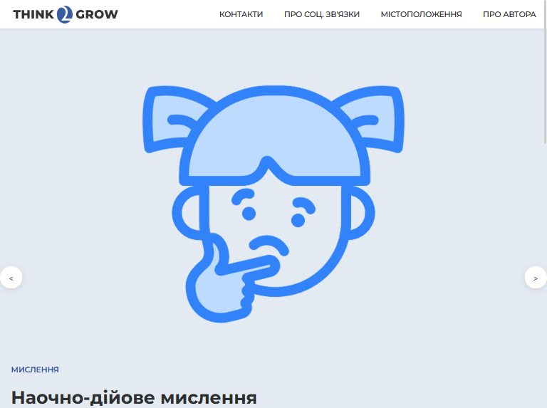
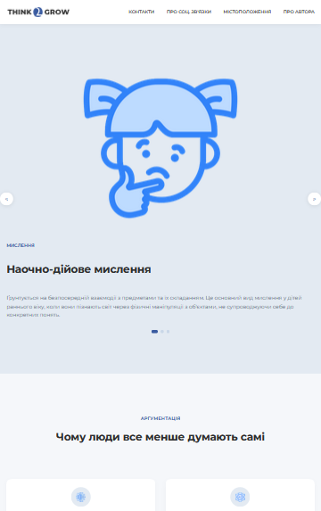

← На головну

Think2Grow
Замовник та сенси
Замовник: Навчальний кейс.
Мета: Розповісти про мислення, соціальні зв'язки та причини, чому люди все менше думають самостійно.
Технології
Опис проєкту
Think2Grow — освітній сайт про мислення та соціальні зв'язки. Сайт охоплює три ключові теми: види мислення (наочно-дійове, образне, логічне), причини деградації самостійного мислення (технології, ШІ, темп життя, десоціалізація) та типи соціальних взаємодій між людьми (безпосередній контакт, віртуальне спілкування, групова взаємодія).

